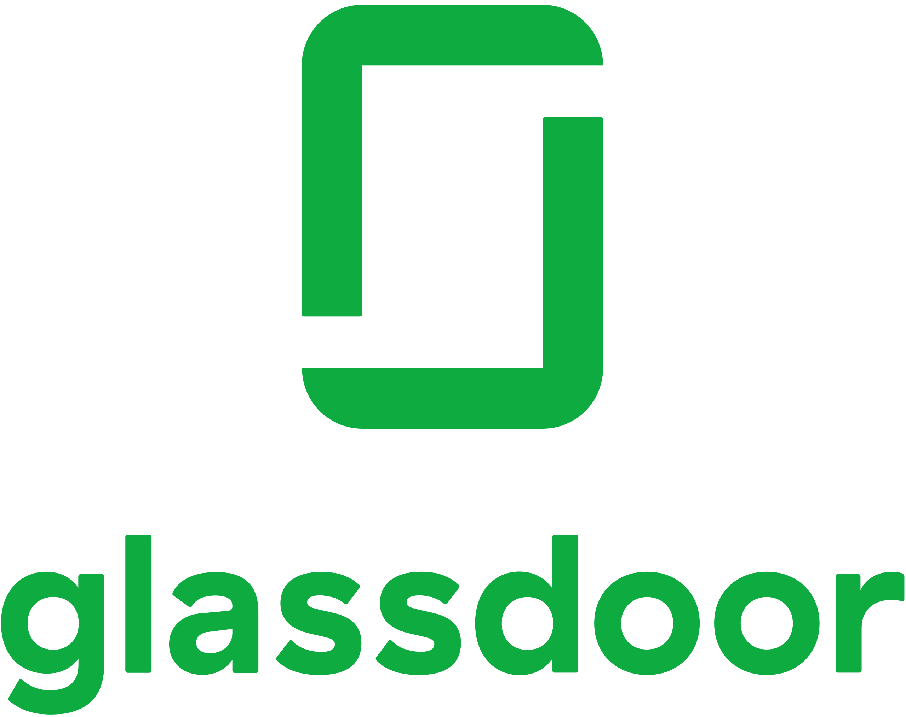
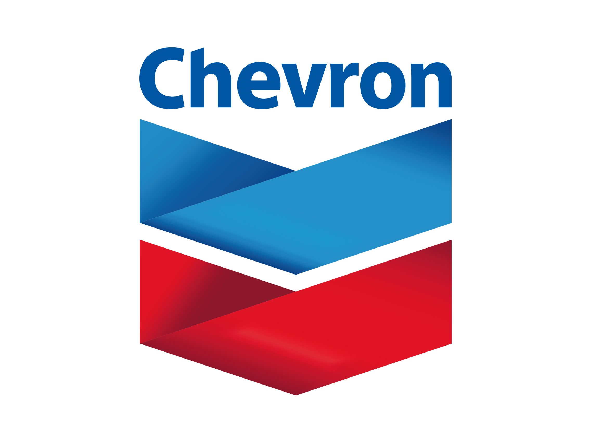

Hi, my name is Rohan Sakalkale!
I'm a Data Engineer located in the Bay Area.
ABOUT ME
Web Dev
Programming
Data & APIs
Analytics

Who am I?
My name is Rohan, and I'm currently a Data Engineer at Google based out of the San Francisco Bay Area. I graduated from the University of Texas at Austin in 2018 with a BBA in Management Information Systems and a minor in Computer Science.
PORTFOLIO
-
GoogleData Engineer

-
GlassdoorSenior Data Engineer
- Overhauled outdated infrastructure and developed data products to power Employer Center feature through highly performant queries, resulting in a cost savings of $30K per month
- Led initiative to integrate Fishbowl data in order provide post and topic insights to Glassdoor customers and internally track site-wide engagement
 -
ChevronSenior Data Engineer
- Designed a data warehouse using a star schema to simplify business reporting logic and eliminate complex queries upon migrating on-premise ServiceNow data to Synapse dedicated SQL pools
- Built over 30 ETL pipelines to generate type 2 dimensions off several gigabytes of data and loaded it into the data warehouse
- Developed models and pipelines to serve up a one-stop-shop solution to provide senior leadership with metrics for each digital platform, such as cost, number of API integrations, user satisfaction
- Created fully automated CI pipelines and established git workflow for all teams within the release train to follow
- Developed a serverless function app to parse and output schemas of entities from the enterprise common data model in order to ensure structural and semantic consistency across disparate applications
- Evaluated and piloted data governance tools with business stakeholders based on criteria such as implementation complexity, ease of integration, and cost of long-term maintenance
- Configured Ansible role to tag and capture end-to-end data lineage for over 900 Azure Data Factory instances enterprise-wide
- Engineered API to expose data containing Chevron owned real estate assets and environmental sites for consumption by other business units, resulting in faster time-to-insights and streamlined access to data
- Managed migration from Azure Data Lake Store to Gen 2 Lake in order to take advantage of new Azure capabilities dedicated to big data analytics
- Refactored API calls and data transformations from C# to Python, simplifying the codebase and reducing technical debt
 -
ChevronData Engineer / Analytics Developer
Chevron has embarked on a journey of digital transformation in order to deliver more value to the business. A couple of the core imperatives of transformation are data being viewed as an asset and the vision of an enterprise-wide data lake. The image to the right (or below if being viewed on a mobile device) gives an overview on the type of MDW architecture Here are a few ways that I contributed to the afformentioned imperatives:
- Worked on migrating on-premise ETL pipelines to cloud-provisioned servers via a modern data warehouse architecture providing an average cost savings of 30 to 50 percent
- Co-engineered an API to "geocode" Chevron owned real estate assets and environmental sites data for consumption by other business units delivering faster time-to-insights and democratized access to the data products
- Evaluated Azure Data Catalog as the data governance tools based on criteria such as implementation complexity, ease of integration, and cost of long-term maintenance

-
ChevronSoftware Engineer
As a college new hire, I was given a great opportunity to work directly with a business unit in Downstream & Chemicals. I primarily developed on the Salesforce platform, where I attained two certifications: Salesforce Certified Platform Developer I (Cred ID: 20582277) and Salesforce Certified Admin (Cred ID: 19884277).
While I was on the team, I worked on two major efforts: overhauling aniquated processes in Sales Cloud and implementing a B2B commerce portal with integrations and a document management system. Here are some of the results from both of those efforts:- Designed and implemented an API integration pattern which linked SAP and Azure to a B2B Commerce portal in Salesforce to provide on-demand PDF generation
- Led off-shore resources through bi-weekly check-ins and code reviews to champion Chevron’s development standards, best practices, and digital imperatives
- Orchestrated and developed a strategy to modernize Sales Cloud through dark deployment resulting in a seamless integration into production with zero downtime

-
IntelSDG Technical Intern
As an intern at Intel, my primary goal was to assist Project Analysts by delivering solutions to provide faster time-to-insights via automation and data manipulation. During the semester, I worked at least 20 hours a week along with being a full-time student. Results achieved include the following:
- Crafted a program to track projected vs. actual headcount through extrapolation using Data Analysis Expressions (DAX) with the goal of projecting quarterly operating expenses
- Constructed over 50 pre-silicon design indicators through SQL and PowerPivot for mobile System-on-Chip (SoC) processors which were used by senior management to track project milestones
- Optimized the team’s reports and scheduling data through the use of robotic process automation in Visual Basic for Applications (VBA)

-
Texas Delta Sigma PiVP of Information Technology
- Maintained full-stack PHP website featuring and MVC driven web applications to facilitate efficient chapter operations
- Built an integration with the Google Maps API which diplayed where members have studied abroad in past semeseters
- Released a document management system via Drupal which made it easier for the business to organize and file assets
-
TexasLawHelp.comClient Project for Business Systems Development Course
- Translated business requirements from product owner and parsed them into tangible technical features and user stories
- Measured impact and scope of proposed changes through outlining benefits and return analysis in the project charter document
- Released a document management system via Drupal which made it easier for the business to organize and file assets
-
Longhorn BankMock Website for Web Application Developmnet Course (MIS 333K)
- Programmed an MVC web application in C# to create a mock bank and gathered relevant business requirements with team
- Utilized GitHub to track changes, issues, features, and bugs in order to prioritize the allocation of resources
- Scheduled weekly meetings with three others to delegate new tasks and report on the status of existing work-in-progress
-
Thomson ReutersQA Engineer Intern
- Developed CI/CD pipelines for eight tax applications using Jenkins and Batch scripts saving Deployment Admins two hours daily
- Awarded the “Most Innovative Idea” for voice-based navigation amongst a pool of 150 full-time employees and 20 teams
- Engineered program in C# and HTML which navigates Thomson Reuters products in order to improve user experience